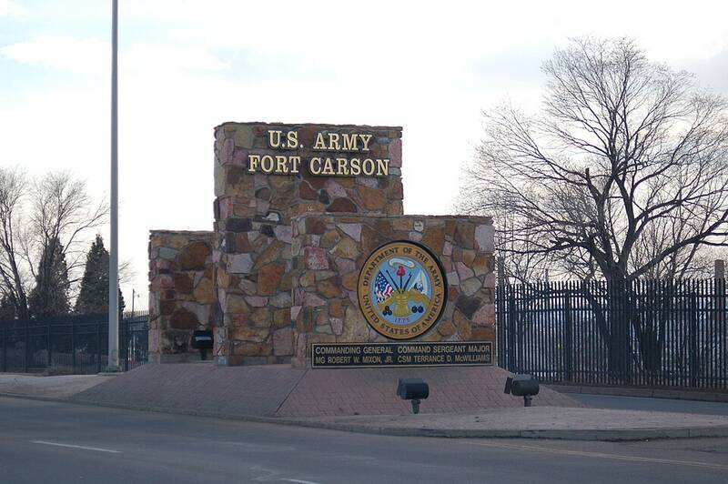

Fort Carson Colorado Colorado · Military base · 38.736°N, 104.788°W One of Fort Carson's main entrance signs. Photo: Fish Cop, Public domain (source) Army post near Colorado Springs. 1 Open in the interactive Watcher Sources Fort Carson Wikipedia